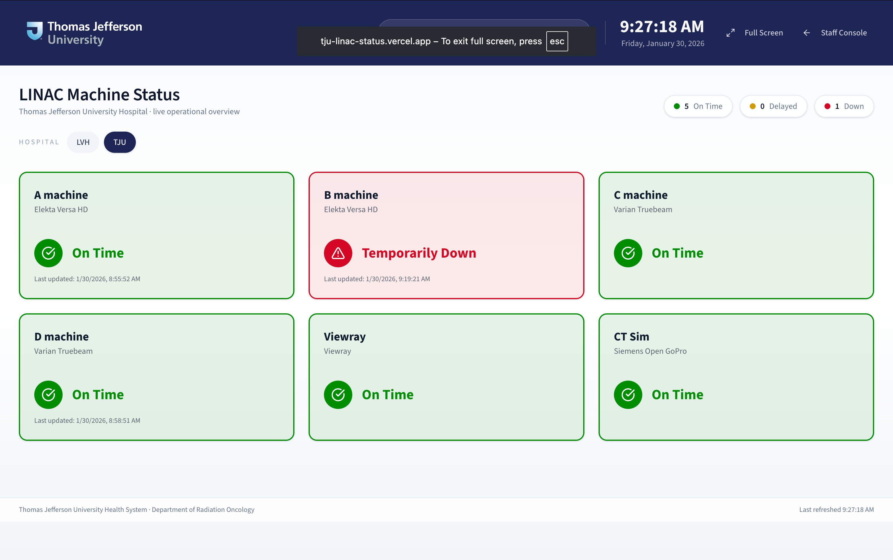

1. Instructions (Quick Use)
Primary workflow
- Open the Staff Console at
/dashboardand sign in. - Select the hospital (TJU or LVH) and the site if prompted.
- Click the edit icon on a machine card to update status.
- Record notes for delays or downtime as needed.
- Review analytics in the Statistics tab.
- Open the Display Wallboard (
/display) for waiting rooms.
Display mode refreshes every 5 seconds and also listens to Supabase Realtime for immediate updates when enabled.

2. Staff Console
Status Updates
Use the edit icon on any machine card to set delays, downtime, or maintenance.
Notes
Attach contextual notes to delays or outages for later reporting.
Statistics
View breakdowns of delay lengths, downtime frequency, and reason summaries.
3. Display Wallboard
The display page is designed for waiting rooms and shared spaces. It is read-only and optimized for large screens.
- Open
/displayin a browser and use the Full Screen button. - Use the TJU/LVH toggle to switch networks.
- Weather defaults to Philadelphia for TJU and Allentown for LVH.
4. Admin Panel
Sites
Create hospital sites and assign each to a network (TJU or LVH).
Machines
Add machines, set display order, and mark active vs inactive.
Users
Assign roles and default sites to control what users see first.
5. Customization & New Supabase Setup
Deployment checklist
- Create a new Supabase project.
- Run the schema scripts in order (see below).
- Set environment variables in your hosting platform.
- Upload hospital logos to
public/brand. - Adjust theme colors in
app/globals.css. - Enable Realtime on
machinesandmachine_statuses.
SQL Initialization
scripts/001_create_linac_tables.sql
scripts/002_create_status_history.sql
scripts/003_add_site_network.sql
scripts/004_add_machine_status_notes.sql
scripts/006_add_machine_status_columns.sql
scripts/007_add_machine_columns.sql
scripts/008_add_machine_status_unique.sqlEnvironment Variables
| Variable | Purpose |
|---|---|
| NEXT_PUBLIC_SUPABASE_URL | Supabase project URL. |
| NEXT_PUBLIC_SUPABASE_ANON_KEY | Supabase anon key. |
| SUPABASE_SERVICE_ROLE_KEY | Server access for admin workflows and analytics. |
| WEATHER_LAT / WEATHER_LON / WEATHER_LOCATION_NAME | TJU weather location. |
| WEATHER_LVHN_LAT / WEATHER_LVHN_LON / WEATHER_LVHN_LOCATION_NAME | LVH weather location override. |